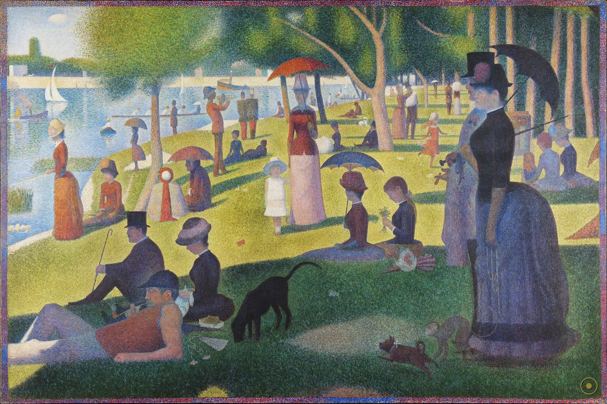
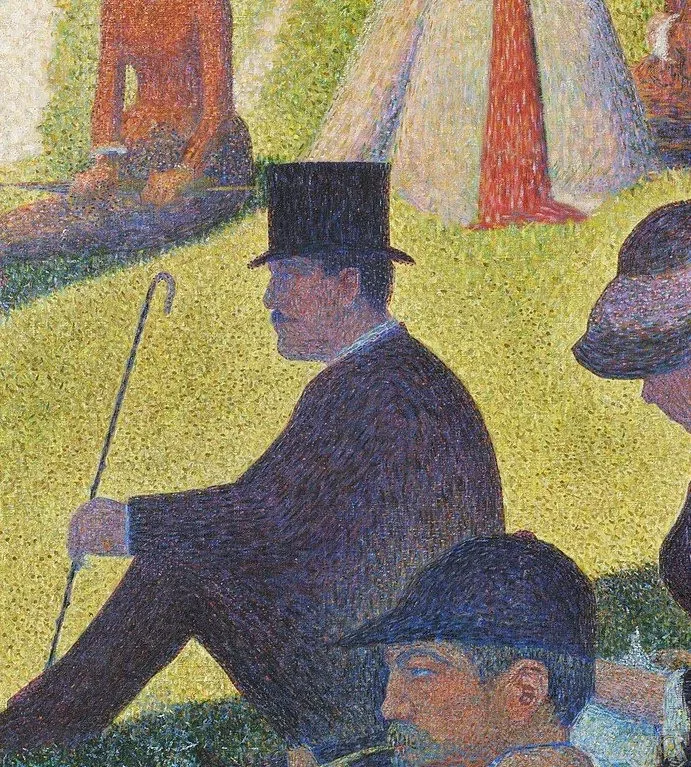
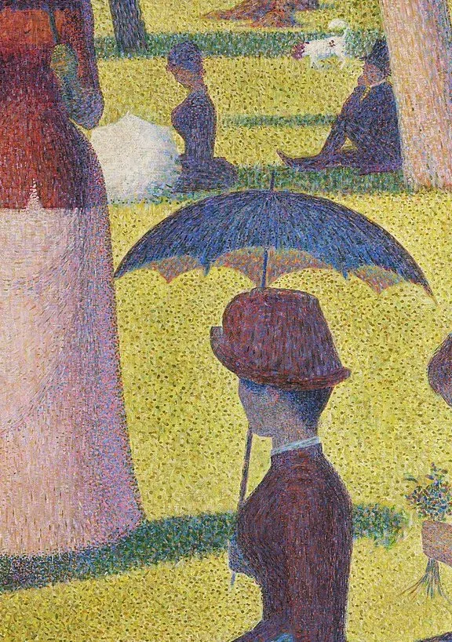
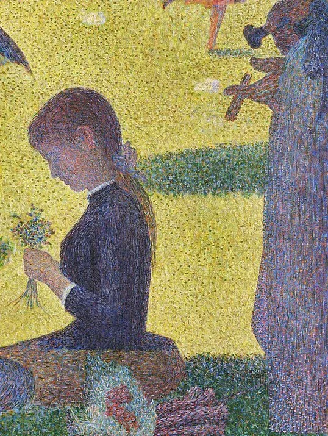
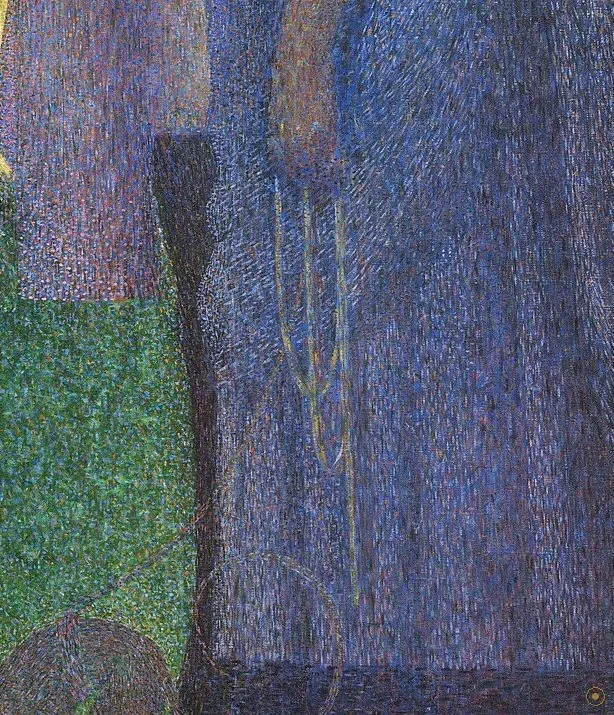
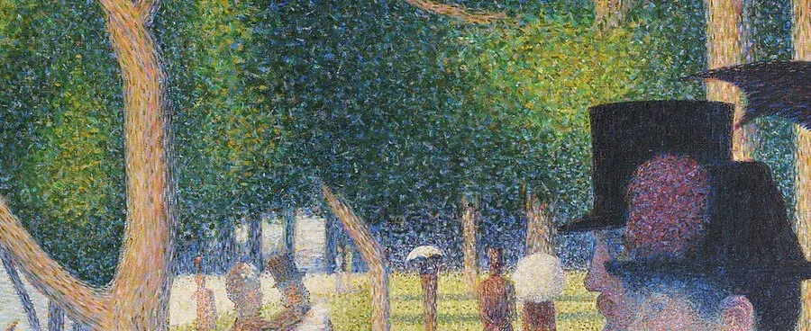
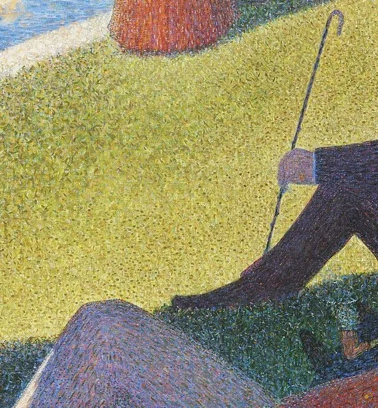
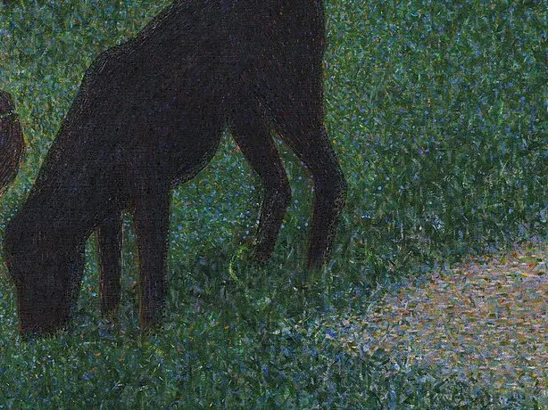
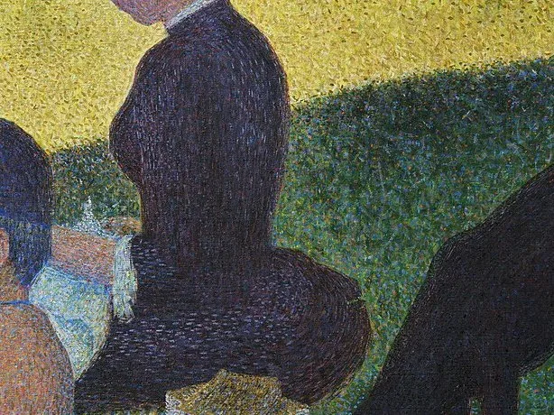
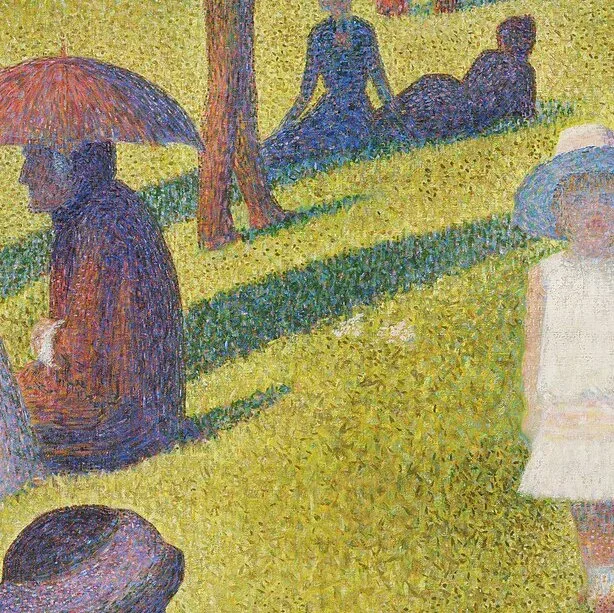

本页面展示的画作包含 艺术人体 / 裸体 内容。所录作品均为美术馆级公有领域馆藏，仅作艺术欣赏与学习之用，不含任何低俗或违规意图。
若您未满 18 周岁，或对此类内容感到不适，请点击「返回画廊」。点击「进入欣赏」即表示您已知悉上述说明，并同意仅作艺术欣赏之用。
「在这幅画里，你看不到任何『事件』——没有相遇、没有冲突、没有叙事。只有几十个巴黎人，在一个星期天的下午，各自待在河岸上。修拉把他们像标本一样钉进了画面，于是时间也停了下来。」
1884 到 1886，乔治·修拉用两年时间，把巴黎郊外塞纳河里一座小岛——大碗岛（La Grande Jatte）——的河岸，画成了艺术史上最安静、也最奇特的一幅大画。画面横宽逾三米，塞进了几十个人、一条狗、一只猴子、几艘船，却没有任何人看任何人：所有人都像被同一台相机在某一瞬按下快门，然后永远停在那个姿势里。撑阳伞的女人背对着你，牵着猴子的女人低着头，远处的船在水面化成几道轻描淡写的笔触。
更怪的是它的画法。整幅画由无数颗黄豆大小、互不混合的纯色小点铺成——修拉称之为「点彩法」（divisionism / pointillism）。你凑近看，满眼是红点、蓝点、黄点；退后几步，这些点才在眼睛里自己『混』成草地、河水、阳光和皮肤。他不是在『画』光，而是把光拆成一管管颜料，请你的视网膜替他完成最后的调和。这种把科学塞进画笔的做法，让他成了「新印象派」的旗手，也让他那一代人直呼看不懂。
这一页不解释光学，只陪你在这个下午里走一圈。我们顺着修拉的耐心，从那把阳伞、那只猴子、那顶高礼帽，一直数到画布上最不起眼的橘子和最显眼的『点』。看完你会明白：它之所以不朽，不是因为画了多热闹的场面，而是因为——它把一个流动的、喧闹的现代周日，硬生生冻成了一个可以反复回看的永恒。
—— 综合自 Art Institute of Chicago、MoMA、Smarthistory 等公开资料的评述（据英译转译，措辞因译本而异）
在本页左下角，可以点亮一首与这幅画同代的法国音乐。
修拉把几十个人塞进了同一个下午，每个人都是一处可以解开的谜。

点击画面中的 ✦ 光点 查看画面细节 · 图片来源：Wikimedia Commons（公有领域）
它起于 1884 年塞纳河边的一次写生，终于 1886 年最后一次印象派大展——在那里，修拉成了新流派无可争议的旗手。
1884 · 塞纳河边的岛
1884 年起，二十来岁的修拉开始在大碗岛写生、画草图。这座巴黎西郊塞纳河中的小岛，当时刚从工业区变成巴黎人周末散心的去处。他没有去画宏大的历史或神话，而是盯上了最不起眼的题材：一群中产阶级在草地上发呆。为了这张画，他留下了约 60 张油画草图和无数素描，反复推敲每个人、每棵树的位置——我们看到的那个『瞬间』，其实是被他用两年、几百张稿子，精心『摆』出来的静止。
➤1885–1886 · 把画『点』出来
第二阶段，修拉把在岛上得到的构图搬回画室，改用一种近乎科学的方法上色：不再在调色板上调色，而是把补色的小点一粒粒点满画布，靠观众的眼去混合。这套后来被称为『点彩法 / 分割主义』的技法，源于他对色彩光学（谢弗勒尔、鲁德等人的理论）的研读。当两米多高的画布被上百万个点填满，原本柔和的暮色，变成了一片会发光的、颗粒分明的光雾。
➤1886 · 第八届印象派展
1886 年 5 月，修拉把完成的大画送展第八届（也是最后一届）印象派展；同年 8 月，它又主导了独立艺术家沙龙。评论两极：有人被它的『硬』和『怪』吓退，也有人——如批评家费利克斯·费内翁——立刻认出这是一场革命。修拉由此被推上『新印象派』（Neo-Impressionism）领袖的位置；而这场流派，正是从这片塞纳河岸的午后开始的。

真事一 · 它画了整整两年，草图却比成品还多。修拉为这幅画做了约 60 张油画草图和大量素描，光是『整体构图』的草图就有好几版；他在岛上反复写生，把人物一个个从写生稿挪进大画。换句话说，我们看到的那个『瞬间』，是被他用了两年、几百张稿子，精心『摆』出来的静止——所谓『捕捉自然的一刻』，其实是工程级的精密摆拍。
真事二 · 那只猴子，是有意的暗号。画中牵猴子的女人，在 19 世纪巴黎的视觉语汇里不是随手的装饰：猴子长期被用来影射妓女与街头卖艺，是『被物化的女性』的暗号。艺术史家（如罗伯特·赫伯特）据此把画里好几个人读成周末来此寻欢的各色都市男女。修拉没有明说，但他把这只猴子放在前景最左，等于在画面里埋下了一句当时人一读就懂的旁白。
真事三 · 它启发了一部音乐剧。1984 年，史蒂芬·桑德海姆与詹姆斯·拉潘创作的音乐剧《星期天与乔治在公园里》（Sunday in the Park with George），正是以修拉和这幅画为原型，其中一幕几乎把画中人物逐一『复活』。2015 年，芝加哥艺术博物馆还真的把画中人物请到馆前草坪，真人重现了这幅画的构图——它早已溢出画框，成了大众文化的一部分。
※ 关于画面人物的身份读解（风尘符号、都市闲暇等）为学界通行解读，各有支持与质疑；草图数量、首展信息据 Art Institute of Chicago 等公开资料；引文据英译转译，措辞因译本而异。
把画面拆开看：几十个人，没有两个在看同一处——这正是修拉想要的『疏离』。

背对你的她，后来被借成了『现代闲暇』的图标。
猴子在当年影射风尘，是画面里最直白的都市旁白。

持钓竿的他，与阳伞女子把横长的画面稳稳压住。

一片白影，被读成修拉对情色暗示的『正名』。

几道笔触，是满画静止里仅存的流动。

斜倚的他，是巴黎人被驱赶到郊外的倦怠。

满画静止中，它和猴子一起勉强留着一点活气。

补色小点只在你眼里混合，画出比调色更亮的光。

把前景与远水一层层推开的精确疏离。
修拉的点彩法直接来自 19 世纪色彩光学（谢弗勒尔《色彩的对比》、鲁德的互补色理论）。他不相信调色板上的调和，坚持把纯色小点并列，让补色在视网膜上自行混合——这既让画面更亮、更有震动，也把绘画从『再现』推向『知觉的科学』。后印象派的凡高、高更、西涅克都从这里接过火种，点彩由此成了通往 20 世纪抽象与色彩研究的一级台阶。
1880 年代的巴黎正在奥斯曼化：林荫道、百货公司、周末出游，一种新的都市生活把人变成流动的背景。修拉选了大碗岛这个新兴的『周末目的地』，把中产阶级的慵懒画成一座纪念碑——在这一点上，他和同一时期的印象派，以及后来所有都市观察者站在同一阵线：现代绘画要画的，不再是神或英雄，而是这些被时代推到河边的普通人。
1886 年首展时，许多观众和批评家被画里人物的僵硬、技法的『怪』劝退；但年轻批评家费利克斯·费内翁立刻撰文盛赞，并为这场运动命名『新印象派』。这场从『看不懂』到『封神』的翻转，是这幅画历史的一部分——它先是一桩怪事，然后才被追认成基石。
从桑德海姆的音乐剧，到 2015 年芝加哥艺术博物馆在馆前草坪真人重现画中构图，再到无数广告、电影对那把阳伞的借用——它早已超出画框，成了大众文化里『现代闲暇』的母题。而修拉那套『科学点彩』，也一路通向了 20 世纪的抽象绘画与色彩科学。
修拉在大碗岛写生、绘制约 60 张油画草图，反复推敲构图，把人物一个个从写生稿挪进大画。
完成大画，5 月首展第八届印象派展，8 月主导独立艺术家沙龙，『新印象派』由此得名。
修拉英年早逝，年仅 31 岁；其点彩体系由西涅克、克罗斯等人继承发扬。
入藏芝加哥艺术博物馆（据公开资料），成为该馆最负盛名的藏品之一。
桑德海姆音乐剧《星期天与乔治在公园里》以本画为原型；它成为大众文化里『现代闲暇』的母题。